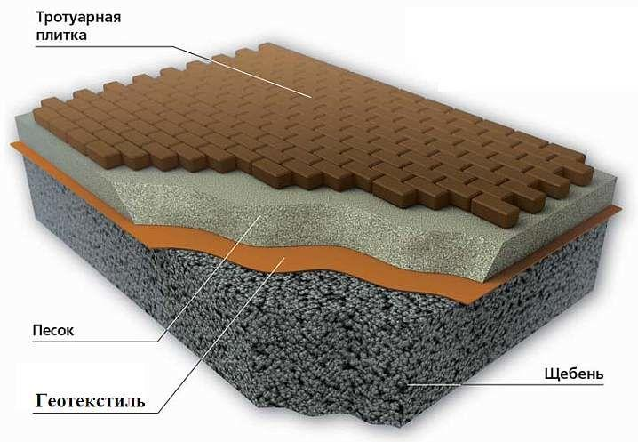

ГЕОТЕКСТИЛЬ
СЕКРЕТ ПОПУЛЯРНОСТИ
Геотекстиль относится к группе геосинтетиков, то есть материалов, которые используются для создания слоев различного назначения. Это могут быть как защитные, так и теплоизолирующие слои, и многие другие. Под геотекстилем понимают две разновидности материалов. Это: - геоткань; - нетканое полотно. В последнем случае к геотекстилю относят геосинтетики, изготовленные при помощи гидроскрепления, термоскрепления или иглопробивным способом. Причем в данном случае материалом для геотекстиля может послужить как одна длинная непрерывная нить (мононить), так и довольно короткие обрезки — длиной от 5 до 10 сантиметров, называющиеся штапелем.
ПРЕИМУЩЕСТВА
Одним из самых значимых плюсов данного материала является его универсальность. Все дело в том, что сфер применения геотекстиля невероятно много. Общие преимущества геотекстиля как строительного материала следующие: - обладает физико-механическими свойствами, а также изотропностью — технические характеристики материала не изменяются на протяжении всего срока эксплуатации; - стойко переносит воздействие агрессивных химических соединений, таких как кислоты и щелочи; - в связи с тем, что геотекстиль изготовлен из синтетических материалов, он полностью не подвержен гниению, воздействию на него всевозможных грибков и плесени; - устойчив к воздействию насекомых; - не имеет проблем с термоокислительным старением. Все вышеперечисленное является только общими плюсами геотекстиля по сравнению с другими строительными материалами. При этом, в большинстве сфер, где данный материал нашел применение, у него раскрывается еще больше положительных сторон.
Задачи, решаемые геотекстилем
В связи с теми преимуществами и свойствами, которые описаны ранее, данный материал может использоваться для решения довольно обширного списка задач. Итак, это: - разделение слоев; - дренажные работы; - распределение нагрузок; - защита от повреждений; - термоизоляция и гидроизоляция. Разумеется, к каждой задаче, которую может решить геотекстиль, потребуется своя разновидность данного материала. К сожалению, несмотря на довольно сильную близость к универсальности, геотекстиль все еще разделяется на определенные категории. Среди них одни сильнее других в вопросах выдерживания нагрузок, а вторые сильнее первых в вопросах изоляции.
Геотекстиль при укладке тротуарной плитки
Одной из сфер, где использование геотекстиля крайне важно — укладка тротуарной плитки. Без его использования песок попадает в щебенку, и плитка со временем начинает проседать. Говорить про применение раствора из бетона вообще не приходится, т. к. сейчас его использование непрактично (остаются лужи, плохо поддается ремонту). Если же покрыть щебенку геотекстилем, она не будет проседать вниз и поверхность останется ровной. К тому же в этом случае щебенка будет представлять из себя дренажный канал, что позволит избежать образования луж. Что важно — геотекстиль не позволит прорастать траве через тротуарную плитку и даже через время она не потеряет в изяществе. Благодаря отличным качествам геотекстиля как строительного материала, его принято использовать не только для укладки тротуарной плитки, но и в других работах. Самые популярные сферы использования: строительство автомобильных дорог, зданий, гидротехнических сооружений, садоводство, ландшафтный дизайн.
НАЗАД